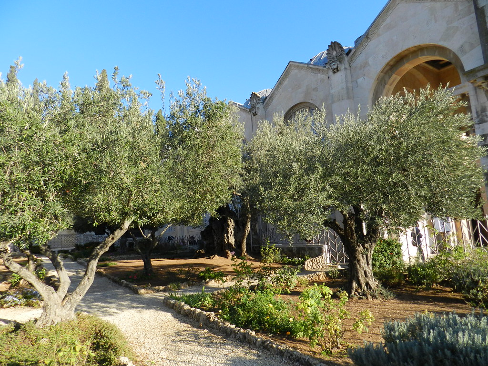

- 

Hobbies

Mis hobbies son estar practicando la programación, y también hacer un poco de ejercicio, me gusta ver series de animación, ánime y escuchar música, me gusta el hecho de estar practicando otra vez lo que vi en el ciclo anterior, es un método que ocupo para reforzar habilidades blandas y también para dar una mejor version al trabajo que uno implemento en el ciclo.